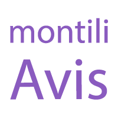
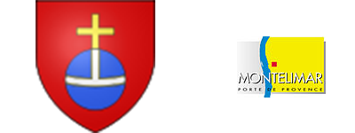

Recherche par filtres
Filtre moyenne d'étoiles

Ville :
Votre position :
Restaurant Google Places :
Restaurant Google Places Focus :
Liste restaurant
 Votre position :
Votre position : Restaurant Google Places :
Restaurant Google Places : Restaurant Google Places Focus :
Restaurant Google Places Focus :